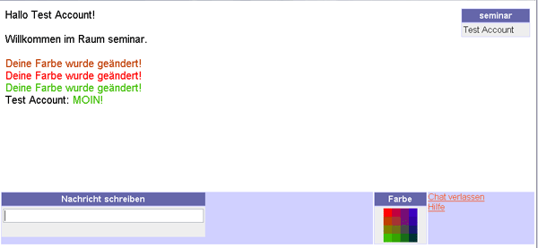

Nach jedem erfolgreichen LOGIN in Stud.IP erreichen Sie Ihre persönliche Startseite. Die Seite dient als Sprungbrett für Ihre weiteren Aktionen in Stud.IP.
Sie sehen drei wichtige Bereiche:
Die Kopfleiste begleitet Sie durch alle Seiten des Systems.
Egal was Sie auch tun, oder wo Sie sich auch verirrt haben mögen - die
Kopfleiste hilft Ihnen jederzeit, wieder bekanntes Terrain aufzusuchen.
Auf der Leiste sind verschiedene Symbole verteilt. Jedes der Symbole kann mit
dem Mauszeiger angeklickt werden - Sie erreichen dann eine andere Seite innerhalb
des Systems.
Manche der Symbole, etwa das Symbol für den CHAT oder die Anzeige "Wer
ist online?" können zudem ihre Farbe wechseln und zeigen damit Änderungen
im System an.
Die Symbole im einzelnen:
 Startseite
Startseite
Mit diesem Symbol kommen Sie von jeder beliebigen Seite im System aus zu Ihrer Startseite.
 Hilfe
Hilfe
Damit erreichen Sie diese Hilfeseiten. Unser Hilfesystem ist Kontext-sensitiv. Das bedeutet, dass das System versucht herauszufinden, zu welchem Bereich von Stud.IP Sie Hilfe benötigen und Ihnen direkt die entsprechende Hilfeseite anbietet. Sollte die Seite für Sie nicht zutreffend sein, erhalten Sie durch Klick auf den großen Button "Inhaltsverzeichnis" (auch oben auf dieser Seite hier!) eine Übersicht über alle Hilfethemen.
 Meine Veranstaltungen
Meine Veranstaltungen
Am häufigsten werden Sie in Stud.IP die Seite zur Auswahl Ihrer abonnierten Veranstaltungen benötigen. Um schnell auf diese Seite zu kommen, haben wir einen Link in die Kopfleiste eingebaut.
 Der Chat
Der Chat
Sie können mit anderen Personen, die gerade in Stud.IP online sind, chatten! Mit einem Klick auf dieses Symbol betreten Sie den Chatbereich.
Wenn sich bereits jemand im Chatbereich aufhält, verfärbt sich das Icon:
 Jemand ist im Chat
Verweilen Sie mit der Maus einen Augenblick auf dem aktivierten Chat-Icon, so erhalten Sie eine Anzeige, wieviele Personen sich gerade im Chatbereich aufhalten. Mit einem Klick kommen Sie selbst in den Chatbereich.
 Nutzer online
(Sie sind alleine)
Nutzer online
(Sie sind alleine)
Dieses Icon zeigt Ihnen an, wieviele Personen ausser Ihnen noch online im System sind. Bleibt das Icon grau, so sind nur Sie online. Verfärbt es sich jedoch rot:
 Nutzer online
(Es ist noch jemand im System unterwegs)
Nutzer online
(Es ist noch jemand im System unterwegs)
Sie sind nun nicht mehr allein im System. Verweilen Sie mit dem Mauszeiger auf dem Icon, bekommen Sie in den meisten Browsern eine Anzeige, wieviele Personen online sind. Mit einem Klick auf das Symbol kommen Sie zu einer Übersichtsseite, die genau aufschlüsselt wer online ist. Sie können von dort aus anderen Nutzern eine System-interne SMS schicken oder sie zum Chatten einladen. Sie können sich hier auch eine Liste Ihrer Bekannten und Freunde, eine sog. "Buddy-Liste", anlegen.
 Einstellungen
Einstellungen
Mit diesem Icon kommen Sie zu Ihrer persönlichen Einstellungsseite. Hier können Sie Ihre persönliche Homepage einrichten, Informationen zu Ihren Studiengängen oder Ihrem Arbeitsplatz angeben, ein Bild von sich hochladen, Ihr Passwort ändern und vieles mehr.
 Suche
Suche
Hier kommen Sie in den Suchbereich von Stud.IP. Sie können nach Veranstaltungen suchen, oder nach Personen die im System registriert sind.
Zusätzlich haben Sie die Möglichkeit, im Archiv von Stud.IP zu stöbern - alle Veranstaltungen werden archiviert. Die Eckdaten sind für jedermann zugänglich (Thema, Dozent etc.). Erweiterte Informationen oder die hochgeladenen Hausarbeiten stehen jedoch nur Personen zur Verfügung, die auch wirklich an der Veranstaltung teilgenommen (es also damals abonniert) haben.
 Administration
Administration
Dieses Icon bekommen Sie nur zu sehen, wenn sie systemweit zumindest den Status "Tutor" innehaben. Sie erreichen mit einem Klick den Administrationsbereich. Hier können Sie, abhängig von ihren Rechten im System, ihre Veranstaltungen, Institute, Personen etc. verwalten.
Wir haben für viele häufig verwendete Aufgaben "Abkürzungen" in das System gebaut (etwa die Doppelpfeile um neue News einzustellen), letztlich landen sie damit jedoch immer im Administrationsbereich. Nehmen Sie sich daher bitte die Zeit, diesen Bereich genauer kennenzulernen. Lesen Sie dazu am besten die folgenden Abschnitte dieser Hilfe: Veranstaltungen verwalten
 Logout
Logout
Ein Klick auf die Tür (oben rechts), und Sie haben sich ordentlich aus dem System abgemeldet.
Sie können das System jederzeit ohne Schaden auch ohne Klick auf "Logout" verlassen - etwa indem sie einfach eine andere Internetadresse in Ihren Browser eingeben. Das System merkt selbstständig, wenn ein User längere zeit inaktiv ist und besorgt dann den Logout für Sie.
Bedenken Sie jedoch, das andere Nutzer im System Sie immer noch unter "Nutzer online" aufgelistet sehen, und eventuell versuchen Ihnen eine SMS zu schicken! Nutzen Sie daher mit Rücksicht auf die Mitbenutzer immer die Logout-Funktion.
2. Oft benötigte Links
In diesem Fenster finden Sie Links zu oft benötigten Seiten. Manche der Links sind zusätzlich auch in der Kopfzeile vertreten (s.o.)
Die Links im Einzelnen:
Meine Veranstaltungen
Hiermit erreichen Sie eine Übersichtsseite, die all Ihre abonnierten Veranstaltungen (also die Veranstaltungen, die Sie dieses Semester belegen) auflistet. Sie sehen dort mit einem Blick, ob es neue Informationen seit Ihrem letzten Login gibt und können dann die Veranstaltungen besuchen. Der Unterpunkt Veranstaltung hinzufügen führt Sie zum sog. Veranstaltungsbrowser, mit dem Sie Veranstaltungen auswählen und abonnieren können.
Terminkalender
Hier erreichen Sie Ihren persönlichen Terminkalender, den Sie nach belieben verändern können. Der Unterpunkt persönlicher Stundenplan zeigt Ihnen automatisch die alle von Ihnen belegten Veranstaltungen in einer Wochenübersicht. Sie können auch eigene Veranstaltungen eintragen oder den Stundenplan ausdrucken.
Persönliche Homepage
Hier kommen Sie zu Ihrer ganz privaten Ecke in Stud.IP. Sie können Ihre persönliche Homepage einrichten, Informationen zu Ihren Studiengängen oder Ihrem Arbeitsplatz angeben, ein Bild von sich hochladen, Ihr Passwort ändern und noch vieles mehr.
Personensuche
Hier können Sie nach anderen, in Stud.IP registrierten Personen suchen um sich deren Homepages anzusehen oder ihnen eine systeminterne SMS zu schicken.
Meine Hilfe
Darüber erreichen Sie diese Hilfeseite.
Beachten Sie jedoch, das die Hilfe des Systems kontext-sensitiv ist, sie also auch an einer anderen Stelle des Hilfesystems landen können. Benutzen Sie gegebenenfalls das Inhaltsverzeichnis!
3. Systemweite News
Hier erscheinen Neuigkeiten, die den laufenden Betrieb von Stud.IP betreffen, also etwa neue Features, Ausfallzeiten des Systems zu Pflegezwecken etc.
Klicken Sie auf die roten Pfeile, um den ganzen Text der Nachricht lesen zu können. Mit einem weiteren Klick auf den Pfeil können Sie die Nachricht wieder schliessen.